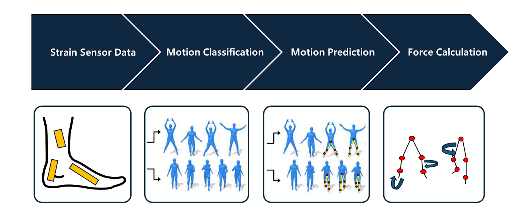
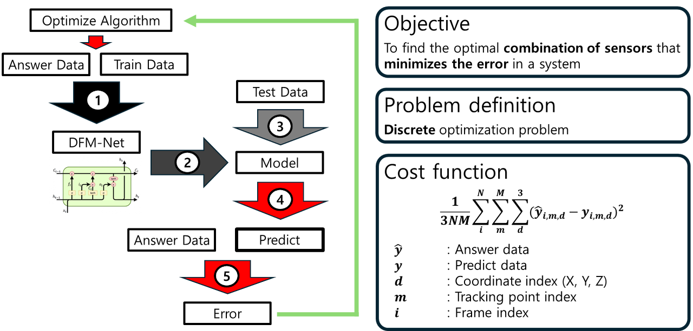
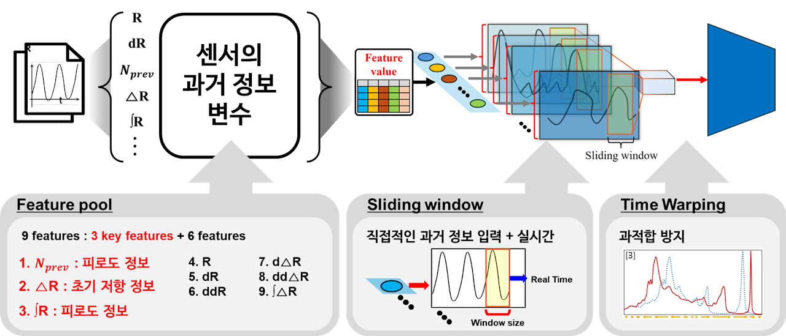
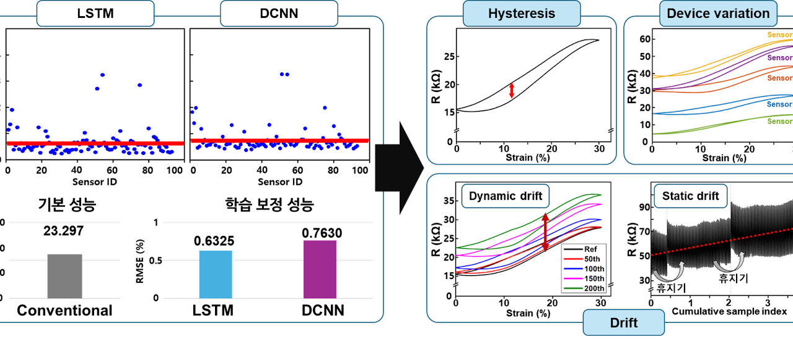
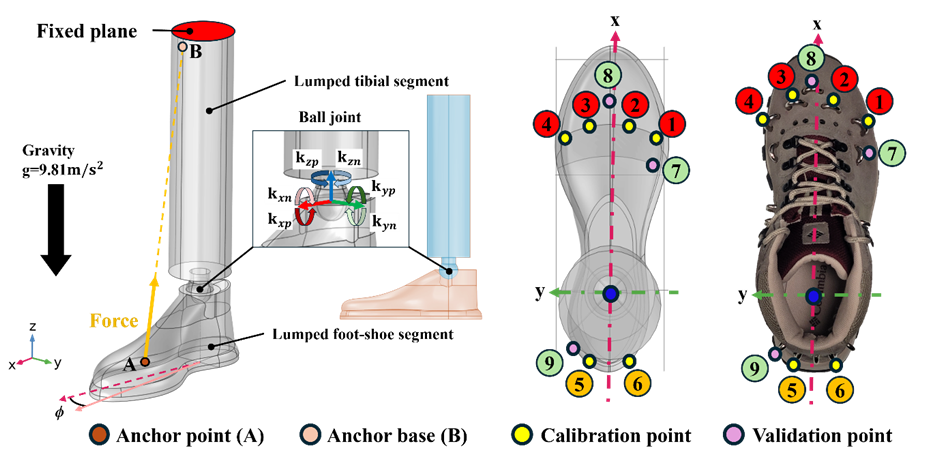
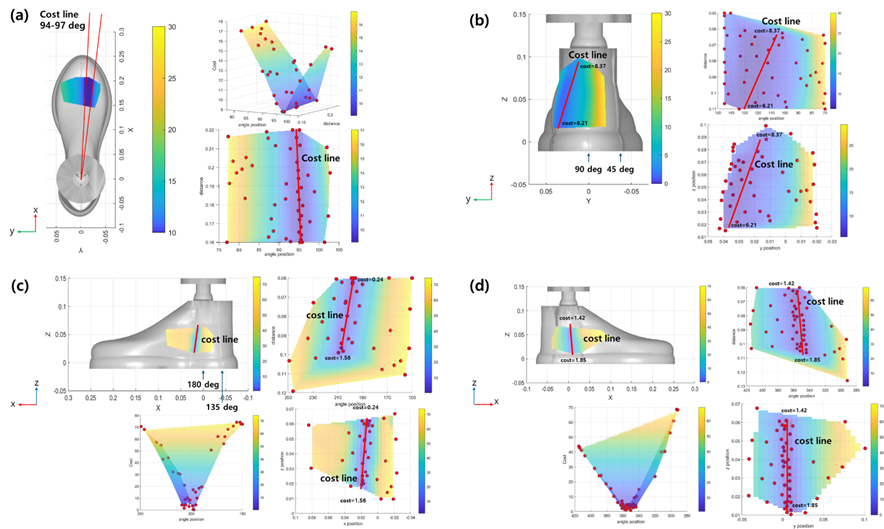
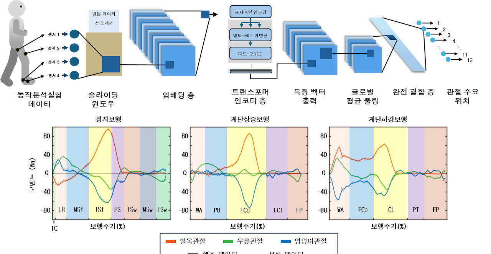
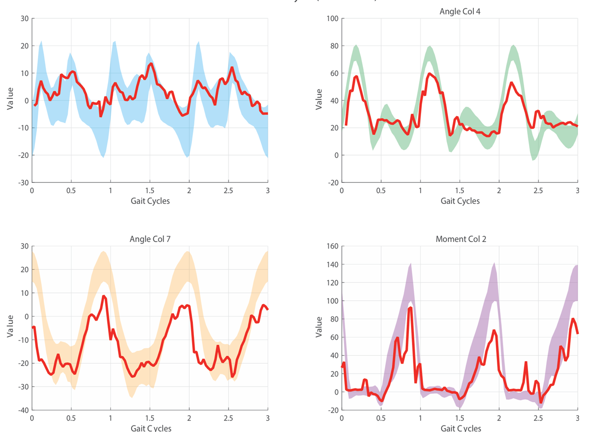

연구 · Exosuit
엑소수트(입는 로봇)는 착용자의 움직임을 미리 알아채고 알맞은 힘으로 보조해야 합니다. 우리는 센서 데이터와 인공지능으로 보행 동작과 필요한 보조힘을 예측하고, 센서를 어디에 몇 개 붙일지까지 최적화합니다. 재활·근력 보조 웨어러블의 성능을 끌어올리는 연구예요.
최소한의 센서로 최대 예측 성능을 내는 조합을 찾습니다.


센서 신호의 이력 오차(히스테리시스)를 딥러닝으로 교정합니다.


발목 유한요소 모델로 보조 장치의 부착(앵커) 위치를 최적화합니다.


다음 동작을 미리 예측해 적절한 시점에 힘을 보조합니다.

